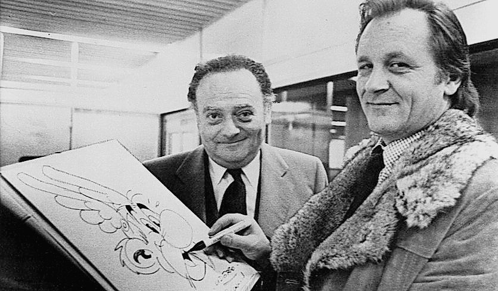
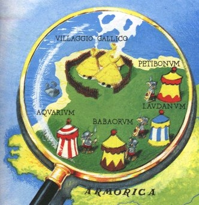
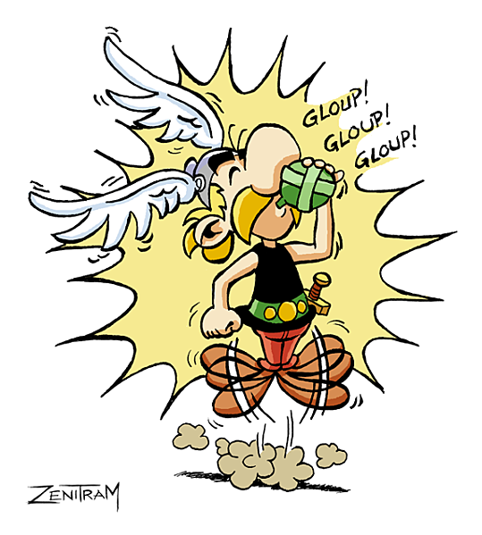
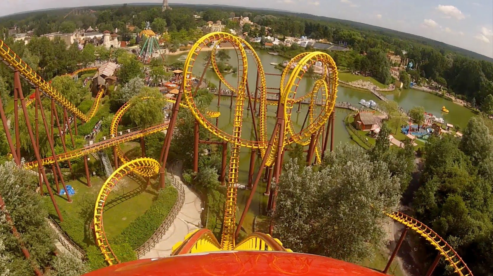

Asterix en Obelix is een Franse serie stripboeken, geschreven door René Goscinny en getekend door Albert Uderzo.
René Goscinny en Albert Uderzo
Het verhaal gaat over een dorpje in Gallië, het enige dorpje in heel Gallië dat nog niet bezet is door de romeinen. De reden dat de romeinen niet geslaagd zijn om het dorp te veroveren, is omdat de druïde van het dorp het recept voor een toverdrank heeft, waardoor je heel sterk wordt. Daarom hebben de romeinen vier legerkampen eromheen gezet: Petitbonum, Laudanum, Babaorum en Aquarium.
Het dorpje omringt door de vier romeinse legerkampen
Het recept van de toverdrank is onbekend, maar in Asterix de Gallier wordt gezegt door Panoramix, de druïde: “De herkomst van deze drank ligt in een ver en vaag verleden… Het recept wordt van druïde op druïde overgeleverd… Het enige dat ik je kan vertellen is, dat er maretak en zeekreeft in gaat. De kreeft is eigenlijk niet nodig, maar die geeft wat smaak aan het drankje.” We weten ook dat de maretak met een gouden snoeimes geoogst moet worden. In andere delen wordt bekend dat de drank ook verse vis en aardolie bevat.
Panoramix met de toverdrank
Door het succes van de serie is het in meer dan 100 talen vertaald en zijn er 13 films over gemaakt: negen animaties en vier opgenomen. Verder is de eerste Franse satelliet ernaar vernoemd en is er een attractiepark over gebouwd, genaamd Parc Astérix.
Parc Astérix